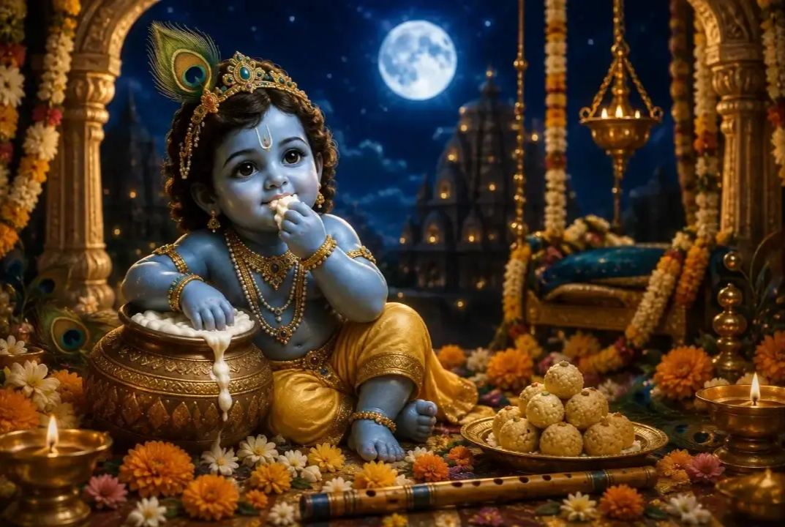
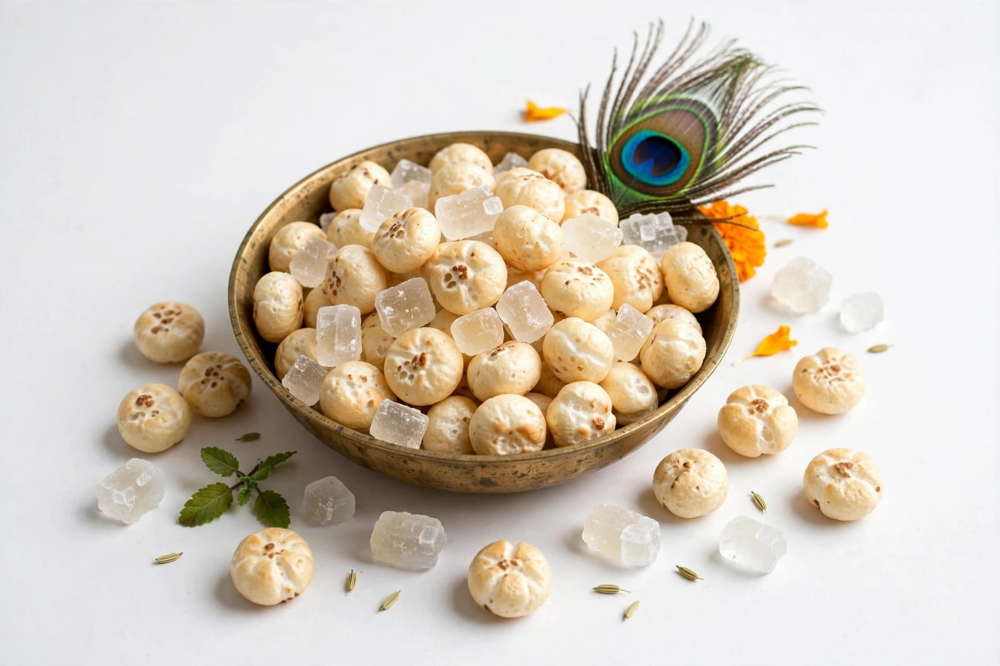
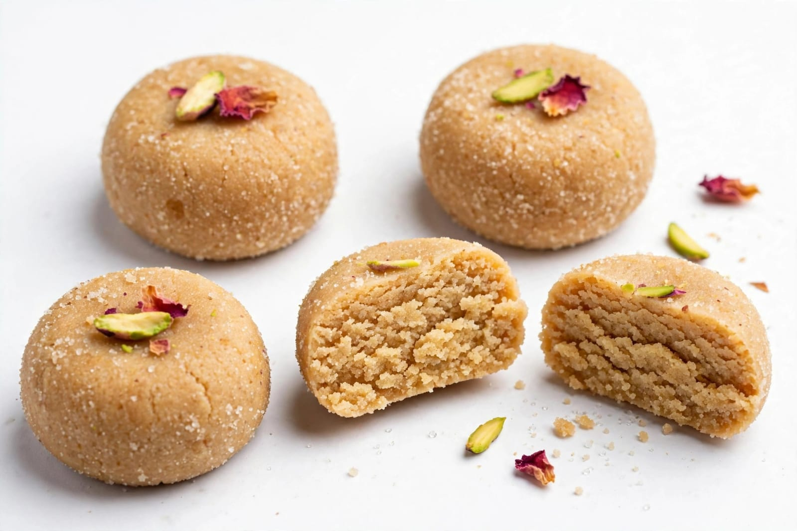
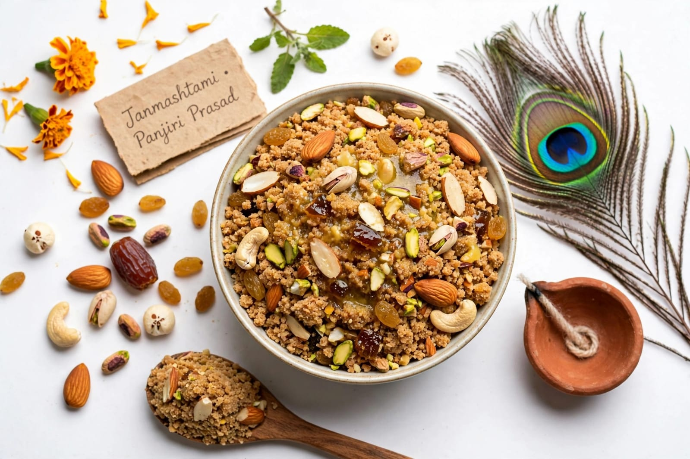

About Janmashtami
Janmashtami is an important Hindu festival celebrated in India. It celebrates the birth of Lord Krishna. Lord Krishna is considered an avatar of Lord Vishnu. Janmashtami is also known as Krishna Janmashtami. The festival is celebrated with great devotion and happiness. The date of Janmashtami changes every year. It is observed according to the Hindu lunar calendar. The festival usually comes during August or September. Devotees observe special prayers on Janmashtami. Many people visit temples during the festival. Temples are decorated beautifully for the occasion. Flowers and lights are used for decoration. Images of Lord Krishna are decorated with flowers. Devotees sing devotional songs during the celebration. Bhajans are commonly sung in temples and homes. People listen to stories about Lord Krishna. Krishna's childhood stories are especially popular. The festival remembers the birth of Krishna in Mathura. Krishna is traditionally believed to have been born at midnight. Many devotees stay awake until midnight. Special prayers are performed at midnight. The birth of Krishna is celebrated with joy. Devotees offer flowers and food to Krishna. Butter and milk products are associated with Krishna. Krishna is popularly known as a lover of butter. Children may dress as Lord Krishna during celebrations. Girls may dress as Radha in cultural programs. Schools organize Janmashtami programs in many places. Cultural performances are held during the festival. Dance and music are important parts of celebrations. Traditional stories are presented through plays. Devotees decorate swings for Krishna idols. Krishna idols may be placed on decorated swings. People prepare special food for the festival. Sweets are offered as part of the celebrations. Fruits and milk products are commonly used. Janmashtami creates a spiritual atmosphere. The festival teaches devotion and faith. It has great religious and cultural importance. Janmashtami is celebrated with happiness across India.
Janmashtami is especially important in places connected with Krishna. Mathura is traditionally known as Krishna's birthplace. Vrindavan is closely associated with Krishna's childhood. Gokul is also connected with stories of Krishna's childhood. These places hold large celebrations during Janmashtami. Temples are decorated with colourful flowers. Special religious programs are organized in temples. Devotees gather for prayers and devotional activities. Many people observe a fast during the festival. Fasting practices can differ according to tradition. Some devotees eat only certain foods during the fast. The fast may continue until the midnight celebration. At midnight, special prayers are performed. Krishna's birth is celebrated at this time. Bells may be rung in temples. Devotional songs are sung with enthusiasm. Krishna idols are decorated with beautiful clothes. Jewellery and flowers are used for decoration. The idol may be placed in a decorated cradle. Devotees offer traditional food to the deity. Milk, curd and butter are commonly associated with Krishna. Makhan is traditionally connected with Krishna's childhood stories. Dahi Handi is a popular Janmashtami tradition in Maharashtra. Dahi Handi is based on stories of Krishna and his friends. Groups participate in Dahi Handi events. Cultural events are organized in many cities. Music and dancing are enjoyed during celebrations. Traditional performances tell stories from Krishna's life. Bhagavad Gita teachings are also remembered during Krishna festivals. Krishna is known for his teachings and wisdom. His teachings emphasize duty and righteous action. Janmashtami reminds devotees of spiritual values. The festival encourages devotion and kindness. Families celebrate the festival together. People visit relatives and friends. Sweets are shared with family members. People exchange greetings and good wishes. Children enjoy cultural programs and decorations. Janmashtami brings communities together. The festival creates a joyful and devotional atmosphere.
Janmashtami is celebrated differently in various parts of India. Each region has its own traditions and customs. Maharashtra is famous for Dahi Handi celebrations. Gujarat also celebrates Krishna festivals with devotion. Uttar Pradesh has major celebrations in Mathura and Vrindavan. Temples in these areas attract many devotees. Special decorations are made for Krishna idols. Devotional songs are sung throughout the celebrations. Dance performances are organized in many places. Children participate in Krishna-themed programs. Food is an important part of Janmashtami celebrations. Families prepare special sweets and snacks. Makhan mishri is traditionally associated with Krishna. Milk-based sweets are also enjoyed during the festival. People offer food to Krishna before eating. Families share food with relatives and neighbours. Janmashtami promotes devotion and togetherness. It teaches people about faith and good values. The festival celebrates the birth of Lord Krishna. Janmashtami is an important and joyful festival of India.
Special Foods

Makhan Mishri
Makhan Mishri is a traditional food associated with Lord Krishna.

Peda
Peda is a popular milk-based sweet enjoyed during festivals.

Panjiri
Panjiri is a traditional sweet preparation made with flour, nuts and ghee.